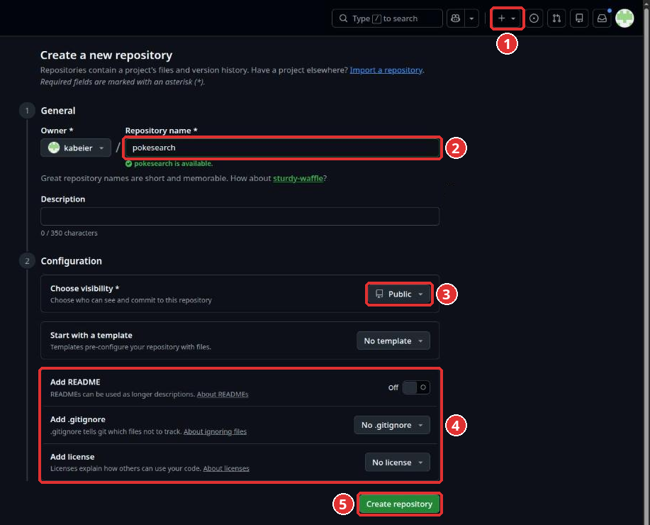
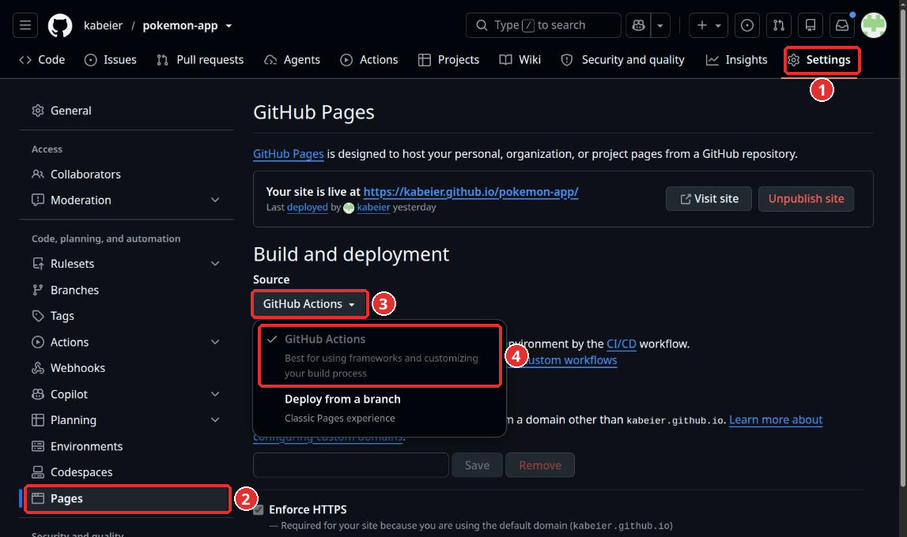
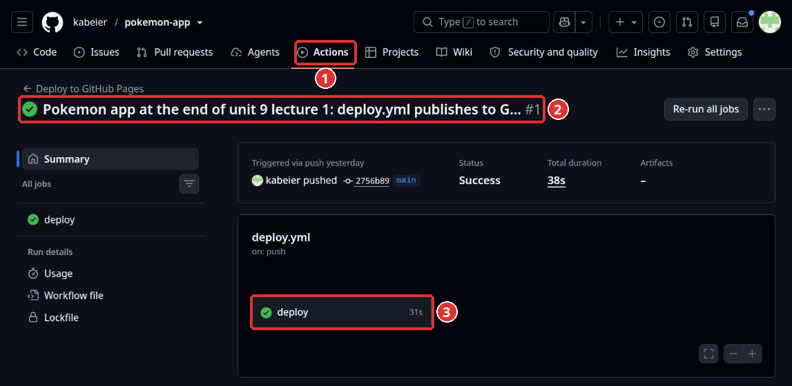
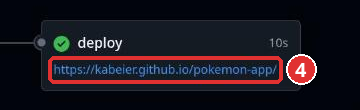

Front-End · Unit 9: CI/CD · Lecture 1 of 2
GitHub Pages: put the app on the internet.
Make a repo, publish it with a workflow, then fix the two things that break on the way.
The plan: Today we put the app on the internet, live: a new repo, a workflow that publishes it, and two fixes when the first deploy breaks.
Before class: Ctrl+Shift+R , F , P .
Code: intro-react-code on unit-8-lecture-2-outlet-context (where unit 8 ended). Logged in to GitHub in the browser.
Check you have no repo called pokesearch yet: you create it live on slide 4.
The build and the deploy run on your laptop and on GitHub. The slides show the files and screenshots of every GitHub screen.
The goal: a real address
GitHub Pages = free hosting for a repo's files, at https://<you>.github.io/<repo>/
It hands out files . It runs no server code: no Node, no Vite.
Today, in order
1 new repo
→ 2 Pages on
→ 3 deploy.yml
→ 4 push: blank page
→ 5 fix: base
→ 6 fix: refresh
→ 7 push: live
We deploy first, see what breaks, and fix it.
The plan: What GitHub Pages is, and the road for today: deploy, watch it break, fix the two problems, deploy again.
Say: "Your app runs on your laptop. Today it gets a real address you can put on your resume."
Point at the road, left to right. The red box is on purpose: everybody's first deploy is a blank page, and we'll find out why.
What Pages will serve: the build
npm run devnpm run buildMakes a dev server, rebuilds on save plain files in dist/ Address localhost:5173/ any file host: GitHub Pages Mode development (StrictMode doubles, warnings) production (small, fast)
npm run build → dist/index.html + dist/assets/index-<hash>.jsOpen dist/index.html: the script path starts with /assets/ (remember this)
dist/ is the website. GitHub will build it for us.
The plan: npm run dev vs npm run build, then a real build: dist/ is exactly what GitHub Pages will hand out.
Do, live: npm run build, open the dist/ folder in VS Code, open dist/index.html. Point at src="/assets/index-….js": it starts at the root of the site. That's Problem 1 later.
The hash in the file name changes when the code changes, so browsers never use an old copy.
dist/ is in .gitignore: never commit it. The workflow builds it on GitHub.
1 · Make a new repo

1 github.com → + → New repository 2 Repository name: pokesearch3 Public (free Pages needs it)4 No README, no .gitignore: our code has them5 Create repository
git remote add pages https://github.com/<you>/pokesearch.git
git push pages HEAD:main
The plan: Create the pokesearch repo live on GitHub, then push our code to it.
Do, live (the red numbers on the screenshot): + menu top right → New repository → name pokesearch → Public → leave README / .gitignore / license off → Create repository.
Why empty: our code already has a README and .gitignore; a README on GitHub would make the first push fail (the histories differ).
The push: GitHub's page says git remote add origin …, but our folder already has an origin (the class repo). So we name this one pages: git remote add pages https://github.com/kabeier/pokesearch.git, then git push pages HEAD:main (HEAD = the branch we're on, sent as main). Refresh the repo page: the code is there.
Students in their own repo just use origin and git push origin main.
Repo name = the address: it becomes kabeier.github.io/pokesearch/. The folder on your laptop can have any name.
2 · Turn on Pages

1 The repo's Settings tab2 Pages in the left menu3 Build and deployment → Source menu4 GitHub Actions
Nothing else to fill in. It saves by itself.
The plan: One setting: Pages publishes whatever our workflow sends it. Do it before the first push of the workflow.
Do, live: Settings tab → Pages (left menu, under Code and automation) → Source dropdown → GitHub Actions .
Say: "The other choice, Deploy from a branch, is the old way: it needs a branch full of built files. We let a workflow do it."
Ignore the workflow suggestions GitHub shows (Static HTML, Jekyll): we write our own next.
The screenshot is the backup repo (pokemon-app), already deployed: it shows "Your site is live". On the new pokesearch repo that box isn't there yet.
If you forget this: the run fails at the deploy step ("Pages site not set up"). Set it, then Re-run jobs .
3 · A workflow that publishes .github/workflows/deploy.yml
The plan: One workflow file: on every push to main, GitHub builds the app and publishes dist/ to Pages.
** CODE ALONG, about 4 minutes. ** Same YAML as fundamentals week: trigger, permissions, one job, steps. Walk it top to bottom: checkout, Node 24, npm ci, npm run build, then the two Pages actions: upload-pages-artifact packs dist/, deploy-pages publishes it.
Point at pages: write and id-token: write: the workflow may publish to Pages and prove who it is. No password or token to copy anywhere.
Press File Types Say N 1 .github/workflows/deploy.ymlname: Deploy to GitHub PagesOn every push to main: get the code, install, build, pack dist/, publish it. Same YAML as fundamentals week.
4 · Push, and watch it run

git add .github
git commit -m "Deploy to GitHub Pages"
git push pages HEAD:main
1 The Actions tab2 The run: Deploy to GitHub Pages 3 The deploy job: green in about a minute4 The link to the site, under the job:

… a blank white page. Why?
The plan: Push the workflow, watch the run go green, open the site: it's blank. That's on purpose; next slide explains.
Do, live: the three git commands, then the Actions tab (red 1). Click the running workflow (2): one job, deploy (3), each step from the file. When it's green, the link is under the job box (4). The screenshots are the backup repo; GitHub shows the link only on the newest deploy.
Open the site: blank. Ask: "The run is green. So why is the page blank?" Open DevTools → Console : red 404s for /assets/index-….js. Click it: it asked kabeier.github.io/assets/…, without /pokesearch/.
Backup, a real green run: Deploy to GitHub Pages in kabeier/pokemon-app (log kept until about Feb 14, 2027).
Problem 1: the app lives in a folder
The page is at It asks for Result you.github.io/pokesearch/ /assets/index.js404: that's you.github.io/assets/ , outside the folder you.github.io/pokesearch/ /pokesearch/assets/index.jsworks
On your laptop the app is at the root (localhost:5173/), so /assets/ was right.
base tells Vite the folder. Only for the build.
The plan: Problem 1: on GitHub Pages the app lives in a folder named after the repo, so the built page can't find its own files.
Point at row 1: that's the red 404 from the Console. Row 2: the same file, with the folder in front. That's what base does.
A blank white page on GitHub Pages = wrong base, almost always.
5 · base, only in production vite.config.js
The plan: We fix Problem 1 with base in vite.config.js, only for production. Don't push yet: there's a second problem.
** CODE ALONG, about 3 minutes. ** Students type their own repo name.
Press File Types Say N 1 vite.config.jsimport react from '@vitejs/plugin-react'defineConfig can take a function: Vite tells it the mode. Build = production. Use your own repo name between the slashes.
Say: "Why only in production? If base is always on, npm run dev moves to /pokesearch/ too, and every Cypress test fails, because they visit /." Watch for (mode) => instead of ({ mode }) =>: base then silently never applies.
Don't push yet. If someone does: the page loads now, but shows our own "404 - Page Not Found". The browser router reads /pokesearch/ as the page name. The hash router (next) fixes that too.
What can mode be? Vite picks it from the command you run:
You run modebase becomesnpm run dev (vite), and Cypress against it'development'/npm run build (vite build), what the workflow runs'production'/pokesearch/npm run preview (vite preview)'production'/pokesearch/ (open localhost:4173/pokesearch/)any command with --mode staging your own name, e.g. 'staging' / (it isn't 'production')
If asked: Vitest runs with 'test'. Not to be confused with command, the other value Vite passes: only 'serve' or 'build'.
Problem 2: refreshing /about
Where Refresh /about Why npm run dev (Vite)works Vite sends every address to index.html, so React Router can read the path GitHub Pages 404 only real files : it looks for a file called about, finds none
Clicking links works everywhere. Only a refresh, or a pasted link, asks the server.
The plan: Problem 2: refreshing /about works locally but gives a 404 on GitHub Pages. Next slide: the fix.
Say: "Clicking a Link never asks the server: React Router just changes the page. A refresh, a bookmark or a pasted link does ask the server for that address."
Point at the two rows: same address, different server. Vite is smart (every address gets index.html); GitHub Pages only hands out files that exist in dist/.
If asked: hosts with a real server (Netlify, Vercel, your own nginx) can be told to send every address to index.html. GitHub Pages can't.
The hash router: what, how, why
Browser router (what we have) Hash router The address /pokesearch/about /pokesearch/# /about Refresh: the browser asks the server for /pokesearch/about /pokesearch/ (everything after # stays in the browser) GitHub Pages answers 404: no such file index.html ✓ React Router reads the page from the path: /about the hash: #/about
Same routes, same Link, same useNavigate. Only createBrowserRouter → createHashRouter.
The plan: What the hash router is, how it dodges the 404, and why we use it only in the build.
What: another router from react-router. It keeps the page's address after a # in the URL.
How (point at the rows, top to bottom):
The # part of a URL (the "hash") is never sent to the server . Browsers have always done this: it was made for jumping to a spot on a page (page.html#section-2).
So on a refresh GitHub Pages only sees /pokesearch/, a real file: it sends index.html.
Our app starts, React Router reads #/about and shows the About page.
Why only in the build: on the dev server clean addresses already work, and our Cypress tests visit /about, not /#/about. So: hash router in production, browser router while developing. That's next slide's code.
Bonus: it also stops the "404 - Page Not Found" on the home page: the folder name is before the #, so the router never sees it.
The cost: a # in the address. Fine for a portfolio site. With a real server you'd fix it on the server instead.
Optional demo: on any site, add #hello to the address and refresh: open DevTools → Network, the request has no #hello in it.
6 · The hash router in production router.jsx · cypress/e2e-prod
The plan: We fix Problem 2 with the hash router in production, and add a small test for the built site.
** CODE ALONG, about 4 minutes. ** ▶ Run tests: 33 green (the dev tests). The smoke test runs against the build (checked with real Cypress: passes with the hash router, fails with the browser router).
Press File Types Say N 1 src/router.jsximport { createBrowserRouter, createHashRout…Both router makers… N 2 src/router.jsx// GitHub Pages has no server to send every ……and pick one: hash in the build, normal paths while developing. Run the tests: 33 green (they run in development). N 3 cypress/e2e-prod/smoke.cy.js// Runs against the BUILT app (npm run build…A small test for the built site: open a page by its address, refresh. It lives outside cypress/e2e, so the normal run skips it.
7 · Push again: it's live
git add .
git commit -m "base and hash router for GitHub Pages"
git push pages HEAD:main
Actions tab: a new run of Deploy to GitHub Pages, then green
Open the link: the app shows (Ctrl+Shift+R if it's still blank)
Click About: …/pokesearch/#/about. Refresh: still About
Every push to main = a new deploy. No extra steps.
The plan: Push both fixes, watch the second run, and check the live site: home page, About, and a refresh.
Do, live: the three commands, Actions tab, wait for green (about a minute), open the link.
Check out loud: Network tab: /pokesearch/assets/… now 200. Search a Pokemon (the API works from a live site too). About → refresh → still About.
Say: "From now on we never deploy by hand. We push, the workflow builds and publishes."
When the page is blank
Symptom Check blank page, 404s for assets in the Network tab base matches the repo name, with both slashes our "404 - Page Not Found" on the home page hash router in production works, refresh on a page gives 404 hash router in production old version still showing wait a minute; hard refresh (Ctrl+Shift+R) the run is red at the deploy step Settings → Pages → Source: GitHub Actions; Re-run jobs no run at all deploy.yml is in .github/workflows/, pushed to main
Network tab first.
The plan: What to check when a deployed page is blank or wrong. Leave it up during the activity.
Repo name with an underscore vs a dash (demo_test2 vs demo-test2) bit the instructor once too.
Activity: deploy your own copy
Your repo → Settings → Pages → Source: GitHub Actions
Add deploy.yml, base with your repo name, the hash router
Push to main; watch the Actions tab
Open your URL, go to About, refresh. Post the URL in the class chat
Stuck? The previous slide. All three files: the code repo, branch unit-9-lecture-1-deploy-pages.
The plan: Students deploy their own copy and post the URL in the chat. 8 minutes.
Walk the room: base and the Pages Source setting are 90% of the problems. A run fails at the deploy step = the Source is not GitHub Actions: set it, then Re-run jobs.
No repo of their own on GitHub yet? Same as slide 4: New repository, empty, Public, then push.
Mental model
Build = plain files in dist/; GitHub Pages hands out files
Settings → Pages → Source: GitHub Actions, once per repo
deploy.yml builds on GitHub and publishes dist/ on every push to main
base = the repo folder; hash router so refresh works. Both only in the build
Next: run the tests first, and deploy only when they pass.
The plan: The mental model for deploying, in four lines.
Ask: "Which of these would give a blank page if you forgot it?" (base.)
Homework, Part I
Portfolio Projects : "Through out the last 8+ days you've continuously build Front-End SPA with React + Vite. DON'T LET THIS WORK GO TO WASTE. Deploy these projects to Github pages and begin building up your Portfolio as a developer."
Part II comes with lecture 2.
The plan: Walk through Homework Part I. Part II comes with lecture 2.
Suggest a checklist: live URL in the README, conditional base, hash router, deploy.yml.